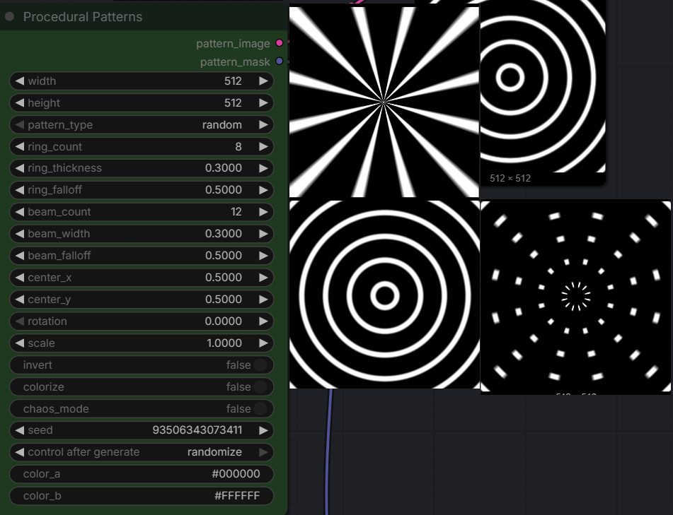

Procedural Patterns
Generates procedural symmetrical patterns (torus rings, radial beams, spiral rings, combined) for visual influence in image generation. Seed only affects output when pattern_type='random' or chaos_mode=True.

Metadata
Generates procedural symmetrical patterns (torus rings, radial beams, spiral rings, combined) for visual influence in image generation. The seed only takes effect when pattern_type='random' (selects the family) or chaos_mode=True (randomizes all parameters); otherwise the output is fully deterministic and seed-independent.
Generates procedural symmetrical patterns (torus rings, radial beams, spiral rings, combined) for visual influence in image generation. Seed only affects output when pattern_type='random' or chaos_mode=True.
Inputs
| Name | Type | Section | Default | Range | Options |
|---|---|---|---|---|---|
width | INT | required | 512 | 64 .. 8192 (step 8) | display=number |
height | INT | required | 512 | 64 .. 8192 (step 8) | display=number |
pattern_type | ANY | required | |||
ring_count | INT | required | 8 | 1 .. 100 (step 1) | display=number |
ring_thickness | FLOAT | required | 0.3 | 0.01 .. 1 (step 0.01) | display=number |
ring_falloff | FLOAT | required | 0.5 | 0 .. 0.99 (step 0.01) | display=number |
beam_count | INT | required | 12 | 1 .. 360 (step 1) | display=number |
beam_width | FLOAT | required | 0.3 | 0.01 .. 1 (step 0.01) | display=number |
beam_falloff | FLOAT | required | 0.5 | 0 .. 0.99 (step 0.01) | display=number |
center_x | FLOAT | required | 0.5 | 0 .. 1 (step 0.01) | display=number |
center_y | FLOAT | required | 0.5 | 0 .. 1 (step 0.01) | display=number |
rotation | FLOAT | required | 0 | 0 .. 360 (step 1) | display=number |
scale | FLOAT | required | 1 | 0.1 .. 10 (step 0.1) | display=number |
invert | BOOLEAN | required | false | ||
colorize | BOOLEAN | required | false | ||
chaos_mode | BOOLEAN | required | false | ||
seed | INT | required | 0 | 0 .. 18446744073709551615 | control_after_generate=true |
color_a | STRING | optional | #000000 | ||
color_b | STRING | optional | #FFFFFF |
Outputs
| # | Type | Name |
|---|---|---|
| 0 | IMAGE | pattern_image |
| 1 | MASK | pattern_mask |